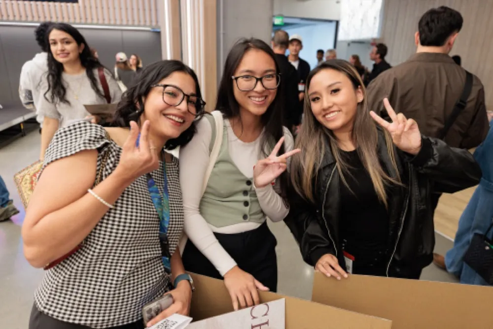
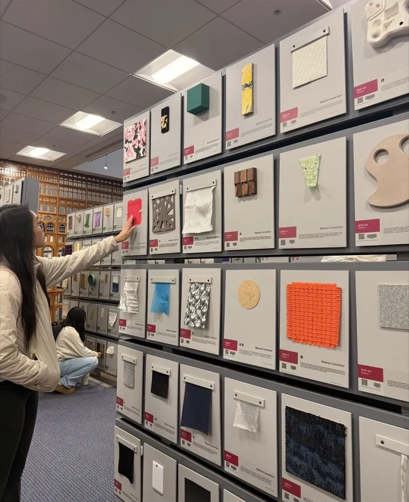
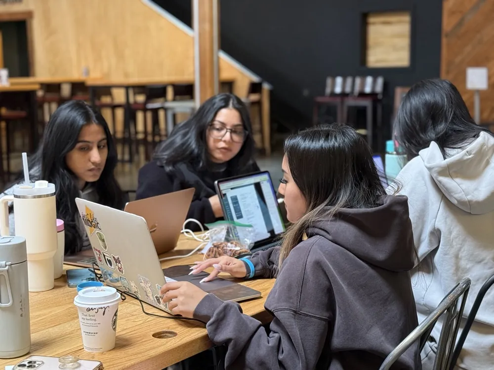
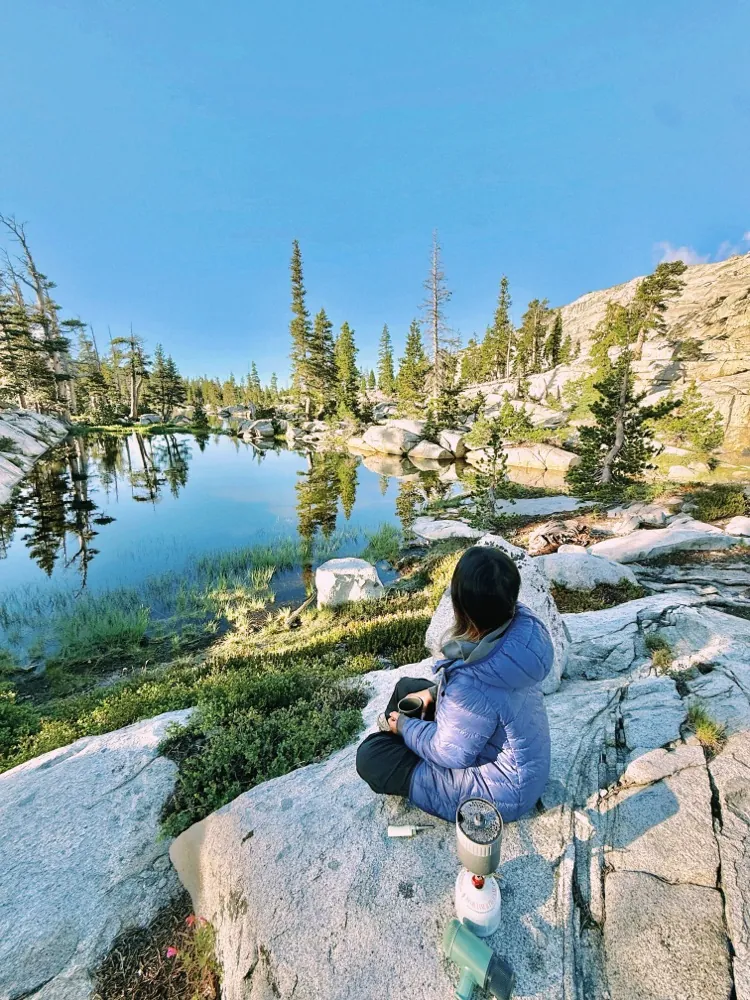

About Me


Nice to meet you - I'm Sydney!
I'm a Master of Design student in Experience Design at San José State University.
My mission in life is to design experiences that help people connect, understand each other, and feel a little less alone.
My path wasn't linear — I started as a Political Science major at UC Riverside before realizing I wanted to design solutions through art, not politics.
I taught myself UX/UI, graphic design, and all my artistic skills outside of class, in any spare time I could find.





Once starting my design program, I kept pushing myself past what I already know —
competing in hackathons, going to conferences, picking up new mediums in class, and building projects alongside my amazing classmates.
Looking ahead, I'm designing at the intersection of human-centered craft and emerging tech — building user experiences that feel immersive, intuitive, and genuinely delightful.

keep learning, use creativity, and live life with kindness